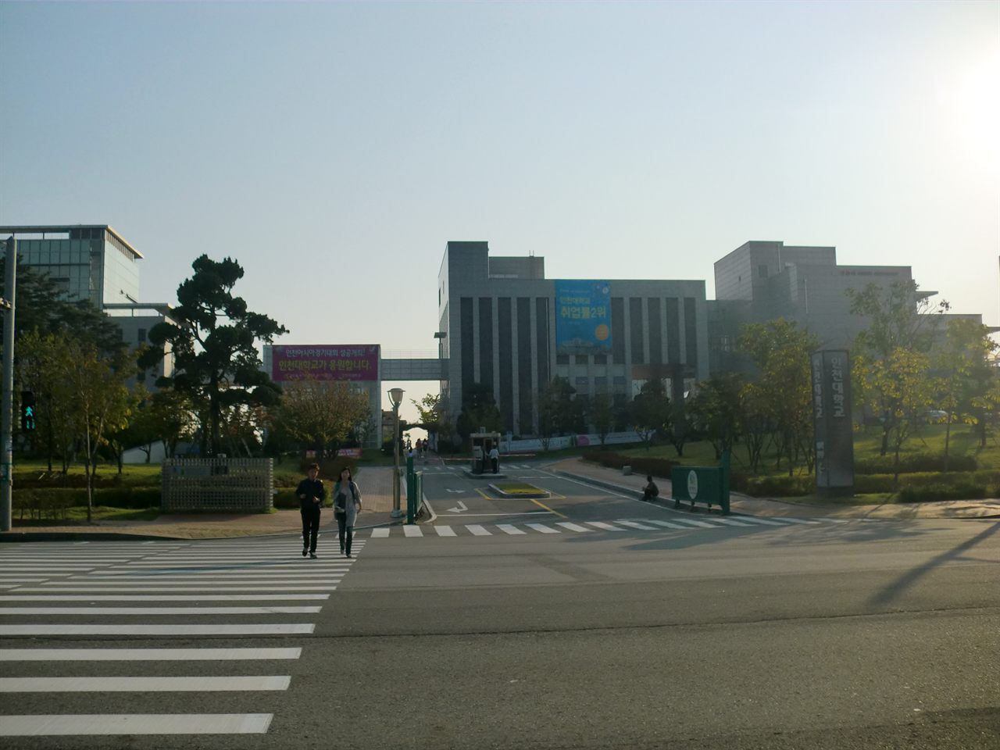

인천대학교는 위치가 조금 특이한 대학입니다. 국립대학법인이면서 캠퍼스는 수도권인 인천 송도에 있습니다. 그동안 저희가 정리해 드린 충남대·강원대·경상국립대 같은 거점국립대는 전부 비수도권에 있었는데, 인천대는 국립대의 성격을 가지면서도 수도권 대학으로 분류됩니다.
이 한 가지 차이가 수시 전략을 통째로 바꿉니다. 지방 국립대 글을 읽고 인천대를 준비하시면 없는 전형을 찾게 되고, 있는 전형을 놓치게 됩니다. 오늘은 그 지점부터 짚어 드리겠습니다. 2027학년도 인천대는 신입생 2,517명(정원 내)을 뽑고, 이 가운데 1,763명(70.0%)을 수시로 선발합니다. 원서접수는 9월 7일부터 11일까지입니다.
① '지역인재'를 찾으시면 안 됩니다 — 인천대에는 '지역균형'이 있습니다
지방 국립대 수시의 핵심은 지역인재전형입니다. 해당 권역 고등학교를 다닌 학생만 지원할 수 있고, 경쟁 범위가 그 지역으로 좁아지기 때문에 실질적으로 가장 유리한 카드가 되는 경우가 많습니다.
그런데 지역인재전형은 비수도권 대학에 적용되는 제도입니다. 인천대는 수도권에 있으므로 지역인재전형이 없습니다. 대신 인천대 학생부교과에는 지역균형전형이 있습니다.
이름이 비슷해 보이지만 성격이 다릅니다. 수도권 대학의 지역균형전형은 보통 학교장 추천 형태로 운영되어, 한 고등학교에서 추천할 수 있는 인원이 제한됩니다. 즉 같은 학교 친구들끼리 먼저 걸러지는 구조입니다. 지역인재처럼 "이 지역에 살면 된다"가 아니라, "우리 학교에서 추천을 받을 수 있느냐"가 관문이 됩니다.
그래서 이 전형을 생각하신다면 지금 확인하실 것은 입시 커뮤니티가 아니라 다니는 고등학교의 추천 기준과 절차입니다. 담임 선생님이나 진학 담당 선생님께 여쭤보는 편이 정확합니다. 인천대의 구체적인 지원 자격과 추천 요건은 모집요강 원문에서 확인하셔야 합니다.
② 교과 804명, 종합 804명 — 반반입니다
인천대 수시의 뼈대는 단순합니다. 수시 1,763명 중 학생부교과에서 804명, 학생부종합에서 804명을 뽑습니다. 둘을 합치면 1,608명으로, 전체 모집인원의 약 64%에 해당합니다. 나머지는 실기·실적 전형 등으로 채워집니다.
교과와 종합이 정확히 같은 규모라는 점이 중요합니다. 어느 한쪽으로 기울어 있지 않다는 뜻이니, "내신이 좋으니 교과만", "비교과가 있으니 종합만"으로 미리 좁힐 필요가 없습니다. 두 축을 나란히 놓고 비교하실 수 있습니다.
세부 전형별로는 이렇게 나뉩니다.
- 학생부교과 · 교과성적우수자 — 456명. 수능최저 적용
- 학생부교과 · 지역균형 — 293명. 면접 없이 서류 100%
- 학생부교과 · 사회통합 — 55명. 면접 없이 서류 100%
- 학생부종합 · 자기추천 — 694명. 단계별 전형, 수능최저 없음
- 학생부종합 · 기회균형 — 110명
가장 큰 덩어리는 학생부종합 자기추천전형 694명입니다. 인천대 수시 지원자 중 가장 많은 인원이 이 문으로 들어갑니다.
③ 수능최저 — 붙는 전형은 '교과성적우수자' 하나뿐입니다
학부모님들이 가장 헷갈려 하시는 대목을 먼저 정리하겠습니다. 인천대 2027 수시에서 수능최저학력기준이 적용되는 전형은 교과성적우수자 하나입니다.
- 교과성적우수자 — 수능최저 적용
- 지역균형 — 수능최저 미적용
- 사회통합 — 수능최저 미적용
- 학생부종합(자기추천·기회균형) — 수능최저 미적용
이게 실전에서 뜻하는 바가 있습니다. 수능 준비가 덜 된 학생도 인천대에 지원할 길이 여러 개 열려 있다는 것입니다. 반대로 말하면 수능최저가 없는 전형은 안전장치가 없어 지원자가 몰리기 쉽습니다. 수능최저가 붙은 전형은 최저를 못 맞춘 지원자가 자동으로 빠지면서 실질 경쟁률이 낮아지지만, 최저가 없는 전형은 쓴 사람이 전부 끝까지 남습니다.
④ 올해 달라진 점 — 교과성적우수자의 수능 응시 과목 요건이 완화됐습니다
2027학년도에 인천대가 바꾼 것 중 학생에게 직접 영향을 주는 변화가 하나 있습니다. 교과성적우수자 전형의 수능최저 충족 방식입니다.
기존에는 수능 4개 과목을 모두 응시해야 했습니다. 바뀐 방식에서는 '2합' 기준을 맞추기 위한 최소 2개 과목 이상만(한국사 제외) 응시하면 되는 구조로 완화됐습니다.
이 변화가 의미 있는 학생은 이런 경우입니다. 국어와 수학은 자신 있는데 탐구가 약하다거나, 반대로 특정 과목 두 개에 화력을 몰아 왔던 학생입니다. 예전 같으면 약한 과목 때문에 응시 요건 자체를 못 채워 지원이 막혔는데, 이제는 강한 과목 두 개로 승부를 볼 여지가 생겼습니다.
다만 '2합 몇 등급'인지의 구체적 숫자와 계열별 적용 조건은 이 글에 적지 않았습니다. 모집단위에 따라 다를 수 있어 확인이 필요합니다. 지원 전 반드시 모집요강에서 본인 학과 기준을 직접 보셔야 합니다.
⑤ 면접이 있는 전형과 없는 전형
인천대 수시에서 면접은 모든 전형에 있는 것이 아닙니다. 어느 전형을 쓰느냐에 따라 준비 부담이 완전히 달라집니다.
면접이 없는 전형은 학생부교과의 지역균형과 사회통합입니다. 두 전형 모두 서류 100%로 선발합니다. 제출 서류로 끝나므로 면접 준비 시간이 필요 없습니다.
면접이 있는 전형은 학생부종합 자기추천전형입니다. 2단계로 진행됩니다.
- 1단계 — 서류평가 100%로 모집인원의 3배수를 추립니다.
- 2단계 — 1단계 통과자를 대상으로 면접을 실시해 최종 선발합니다.
여기서 학부모님들께 꼭 말씀드리고 싶은 것이 있습니다. 1단계가 서류 100%라는 것은, 면접을 아무리 잘 준비해도 3배수 안에 못 들면 기회 자체가 없다는 뜻입니다. 1단계를 넘길 학생부가 먼저고, 면접 준비는 그다음입니다. 순서를 바꾸면 시간을 잘못 씁니다.
2단계에서 1단계 성적과 면접을 어떤 비율로 합산하는지, 면접 방식과 일정이 어떻게 되는지는 모집요강에서 확인하셔야 합니다.
⑥ 인천대 학종은 학생부를 네 가지 눈으로 봅니다
자기추천전형의 서류평가는 학업역량 · 진로역량 · 발전역량 · 공동체역량 네 가지를 봅니다. 이 네 단어를 그냥 지나치지 마시고, 각각이 학생부의 어느 부분을 보는 것인지로 바꿔 읽으시면 준비가 구체적으로 바뀝니다.
- 학업역량 — 성적 그 자체보다 학년이 올라가며 어떻게 공부해 왔는지가 드러나는 부분입니다. 세부능력 및 특기사항이 여기에 해당합니다.
- 진로역량 — 지원한 학과와 이어지는 과목 선택과 활동입니다. 고교학점제 아래에서는 어떤 선택과목을 골랐는지가 곧 답이 됩니다.
- 발전역량 — 인천대가 별도로 두고 있는 항목입니다. 처음부터 잘한 학생보다 막힌 지점을 스스로 넘어선 기록이 읽히는 학생부가 유리하다는 신호로 볼 수 있습니다.
- 공동체역량 — 함께한 활동에서의 태도입니다. 직책의 이름이 아니라 무엇을 했는지가 남아 있어야 합니다.
'발전역량'이 따로 들어가 있다는 점은 특히 중학생 자녀를 둔 부모님께 시사하는 바가 있습니다. 고등학교 3년 내내 내신이 완벽한 학생은 소수입니다. 1학년에 흔들렸더라도 그 뒤에 무엇을 어떻게 바꿨는지가 기록으로 남아 있으면 읽히는 평가 구조라는 뜻입니다.
⑦ 지원 전 체크리스트
- 원서접수 기간 — 9월 7일~11일. 수시는 6회까지 지원할 수 있습니다. 대학별 마감 시각은 서로 다르니 지원하려는 대학의 마감 시각을 각각 확인하셔야 합니다.
- 내 카드가 어느 칸인지 먼저 정하기 — 교과성적우수자(수능최저 O) / 지역균형·사회통합(서류 100%) / 자기추천(단계별·면접) 중 어디에 해당하는지부터 정리하십시오.
- 지역균형은 학교에 먼저 물어보기 — 추천 관련 요건이 있다면 교내 절차가 먼저 움직입니다. 인터넷 정보보다 학교가 정확합니다.
- 수능최저를 쓸 거면 남은 기간 배분 다시 하기 — 교과성적우수자를 쓰신다면 응시 과목 요건이 완화된 만큼, 어느 과목에 집중할지를 다시 계산해 보실 만합니다.
- 자기추천은 1단계 통과가 먼저 — 서류 100%로 3배수를 자릅니다. 면접 대비는 그다음입니다.
- 수시에 합격하면 정시 지원이 불가합니다 — 수시 납치라고 부르는 상황입니다. 6장을 쓸 때 가장 낮은 칸의 학교에도 갈 마음이 있는지 먼저 정하셔야 합니다.
정리하면
인천대 2027 수시는 세 갈래로 요약됩니다. 수능이 받쳐 주면 교과성적우수자, 내신과 서류로 승부하고 면접을 피하고 싶으면 지역균형·사회통합, 학생부의 내용으로 밀어붙이겠다면 자기추천입니다.
수도권에 있으면서 국립대법인이라는 위치, 그리고 수능최저가 한 전형에만 붙는다는 구조 때문에 인천대는 수능이 약한 학생에게 열린 문이 상대적으로 넓은 대학입니다. 다만 그 문이 넓은 만큼 같은 생각을 한 지원자도 많다는 점은 감안하셔야 합니다.
고등학생 자녀를 두신 부모님이라면 지금 확인하실 것은 커트라인 숫자가 아니라, 아이가 어느 갈래에 서 있는지입니다. 와와 학습코칭센터에서는 아이의 내신·학습 상태를 진단하고 남은 기간에 무엇부터 손볼지 함께 정리해 드립니다. 가까운 센터에서 무료 상담을 받아 보실 수 있습니다.
※ 본 글의 모집인원·전형방법·일정은 인천대학교가 발표한 2027학년도 대학입학전형 계획과 이를 다룬 언론 보도를 바탕으로 정리한 것입니다. 수능최저의 구체적 등급 기준('2합 몇 등급')과 계열별 적용 조건, 2단계 서류·면접 반영 비율, 모집단위별 세부 모집인원, 지역균형·사회통합 전형의 지원 자격과 추천 요건, 면접 일정과 방식, 학생부 반영 교과와 산출 방법, 합격자 발표일, 실기·실적 전형의 종목별 기준은 본 글에 담지 않았거나 확정 표기하지 않았습니다. 모집인원은 정원 내 기준이며 최종 확정 인원과 다를 수 있습니다. 지원 전 반드시 인천대학교 입학처의 2027학년도 수시모집요강 원문에서 본인 지원 학과 기준으로 최종 확인하시기 바랍니다. 본 글은 학부모·학생의 이해를 돕기 위한 정리 자료입니다.